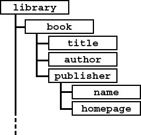
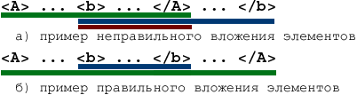

Цель лабораторной работы:
Синтаксически в XML, по сравнению с HTML, нет ничего нового. Это такой же текст, размеченный тэгами, но с той лишь разницей, что в HTML существует ограниченный набор тэгов, которые можно использовать в документах, в то время, как XML позволяет создавать и использовать любую разметку, которая может понадобиться для разметки данных.
Несомненным достоинством XML является и то, что это достаточно простой язык. Основных конструкций в XML мало, но, несмотря на это, с их помощью можно создавать разметку документов практически любой сложности.
Для демонстрации структуры XML документа лучше обратиться к какому нибуть примеру. Рассмотрим следующий XML документ:
Рассмотрим данный пример подробно. Первая строка документа определяет его как XML документ, построенный в соответствии с первой версией языка (version="1.0"). В этой же конструкции можно указать и кодировку, в которой создан документ:
xml version="1.0" encoding="Windows-1251" ?>.
Кодировкой по умолчанию для XML является unicode. Далее находится открывающий тэг корневого (главного) элемента <корневой_элемент>, содержащий элемент <элемент>, который, в свою очередь, содержит элемент <еще_элемент атрибут="значение" /> с атрибутом атрибут. Как видно из примера, правила записи элементов, атрибутов и их значений в XML ничем не отличаются от правил записи элементов атрибутов и их значений в HTML (также есть открывающие и закрывающие тэги элементов, элементы с содержимым и без и т.д.), только набор элементов несколько расширен, благодаря чему мы и можем "нагрузить" разметку семантикой.
Ниже приводятся несколько правил построения XML документа. Итак:
XML документ представляет собой обыкновенный текстовый файл с расширением .xml. Единственная особенность их заключается в том, что для символов файла рекомендуется использовать кодировку Unicode.
Помимо элементов, атрибутов и текста, документы могут содержать и другие конструкции, такие как комментарии, инструкции по обработке и секции символьных данных. Эти базовые составляющие используются для того, чтобы чтобы гибко, но в четком соответствии со стандартами, размечать документы любой сложности. Рассмотрим эти конструкции поподробнее.
Тэги в XML документе не просто размечают текст - они выделяют объект, называемый элементом. Элементы являются основными структурными единицами XML - именно они иерархически организуют информацию, содержащуюся в документе. Элементы могут быть пустыми, т.е. не содержать ни данных, ни других конструкций, или непустыми - включать в себя текст, другие элементы и т. п.
Пустой элемент имеет следующий вид:
<элемент атрибут="значение" атрибут="значение" ... />
Примерами таких элементов в знакомом HTML являются: <br />, <img src="images/picture.gif" /> и др.
Непустые элементы имеют вид:
<элемент атрибут="значение" атрибут="значение" ...>
...
Содержимое элемента
...
</элемент>
В HTML таких элементов большинство: <body> ... </body>, <p> ... </p> - в этих элементах может располагаться как текст, так и другие элементы (таблицы, рисунки...).
Необходимо помнить об обной очень важной особенности XML: имена в XML - регистро-зависимы, то есть <Sample-element />, <SAMPLE-ELEMENT /> и <sample-element /> - совершенно разные элементы.
Легко заметить, что документ, состоящий из вложенных друг в друга элементов, подобен дереву: родительский элемент является корнем, дочерние элементы - ветками, а если они не содержат ничего более - листьями:
Графически этот пример выглядит следующим образом:

В данном случае <library> является корнем, <book> и </publisher> - ветви, а <title>, <author>, <name> и <homepage> - листья
Внимание: в XML требуется тщательно следить за правильностью вложения элементов друг в друга - элементы, раньше открытые, должны быть позже закрыты. В противном случае не может быть и речи о иерархической структуре документа.

В элементах можно использовать атрибуты с присвоенными им значениями. Атрибут задается следующим образом:
атрибут = "значение"
В отличие от HTML в XML атрибуты всегда должны иметь значение! Значение атрибута заключается в двойные или одинарные кавычки. При необходимости, можно использовать одинарные кавычки внутри двойных и наоборот.
<company name = 'Акционерное Общество "Витязь"' ... />
...
<book author = "О'Генри" ... />
Имена в XML регистро-зависимые. Это относится не только к элементам, но и к атрибутам.
Секция CDATA выделяет часть документа, внутри которых текст не должен восприниматься как разметка. CDATA означает буквально "character data" - символьные данные. Вот пример секции CDATA:
<![CDATA[
содержимое
]]>
Внутри секции CDATA могут располагаться любые символы, даже < и & - они не будут восприниматься анализатором как управляющие. Единственная последовательность, которая не должна присутствовать в CDATA, это "]]>" - окончание символьных данных.
XML документ может содержать комментарии, записываемые следующим образом:
<!-- Это комментарий -->
...
<!--
комментарии
могут охватывать
несколько строк
-->
Текст комментария может состоять из любых символов, кроме двух "-" подряд ("--").
Создать XML документ, содержащий информацию о какой-либо предметной области. Название предметной области согласовать с преподавателем. Для оформления XML документа использовать знания и пользоваться правилами, указаными в теоретических сведениях. Проверить документ на действительность.
The Apache Software Foundation создала набор ПО, представляющего собой парсеры и другое обеспечение для работы с XML. Одним из таких известных парсеров является Xerces. Он существует в виде отдельного ПО, реализованного на С++ или Java. Чтобы не ограничивать Вас в выборе инструментальной среды и ОС, будем использовать Java реализацию ввиду ее кроссплатформенности и простоты использования.
Замечание. Для запуска Java приложения необходимо, чтобы на компьютере была установлена Java машина от Sun. Желательно с Java SDK.
Проверить действительность My.XML можно командой
java sax.counter my.xml
При необходимости нужно явно указать путь к архивам Xerces ключом -classpath
java -classpath "PATH\XercesImpl.jar;PATH\XercesSamples.jar" sax.Counter my.xml
(замените PATH на свой путь к местоположению архивов)
Сам Xerces можно скачать отсюда или с официального сайта.